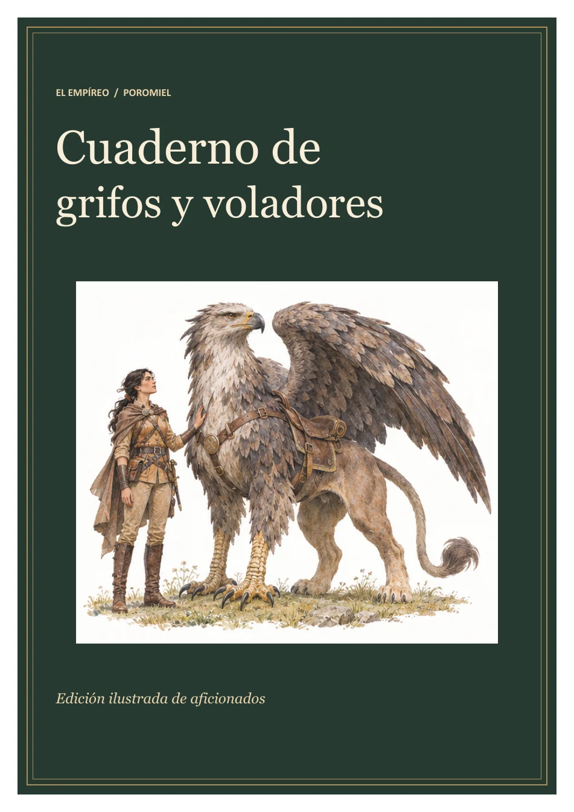

<!doctype html>
<html lang="es"><meta charset="utf-8"><meta name="viewport" content="width=device-width, initial-scale=1">
<title>Portada · Cuaderno de grifos y voladores</title>
<style>
body{background:#202c26;color:#f7edda;font:1rem system-ui,sans-serif;margin:0 auto;padding:1rem;max-width:55rem}
a{color:#f7db9d;text-underline-offset:.2em} header,nav{display:flex;flex-wrap:wrap;gap:1rem;align-items:center;justify-content:space-between}
h1{font:clamp(1.5rem,5vw,2.6rem) Georgia,serif;margin:1.2rem 0}
img{display:block;width:100%;height:auto;margin:1rem 0} details{margin:1rem 0} nav{padding:.55rem 0}
</style>
<header><a href="../">← Compendio de los dragones</a><a href="cuaderno-de-grifos-y-voladores.pdf" download>Descargar PDF</a></header>
<main><h1>Cuaderno de grifos y voladores</h1>
<details><summary>Índice del cuaderno</summary><ol><li><a href="index.html">Portada</a></li><li><a href="pagina-02.html">Contenido</a></li><li><a href="pagina-03.html">Grifos de Poromiel</a></li><li><a href="pagina-04.html">Kiralair</a></li><li><a href="pagina-05.html">Dajalair</a></li><li><a href="pagina-06.html">Cibbelair</a></li><li><a href="pagina-07.html">Sovadunn</a></li><li><a href="pagina-08.html">Silaraine</a></li><li><a href="pagina-09.html">Registros y fuentes</a></li><li><a href="pagina-10.html">Contraportada</a></li></ol></details>
<nav aria-label="Páginas"><span>Portada · 1 de 10</span><a rel="next" href="pagina-02.html">Siguiente →</a></nav>

<nav aria-label="Continuar lectura"><a rel="next" href="pagina-02.html">Siguiente →</a></nav></main></html>